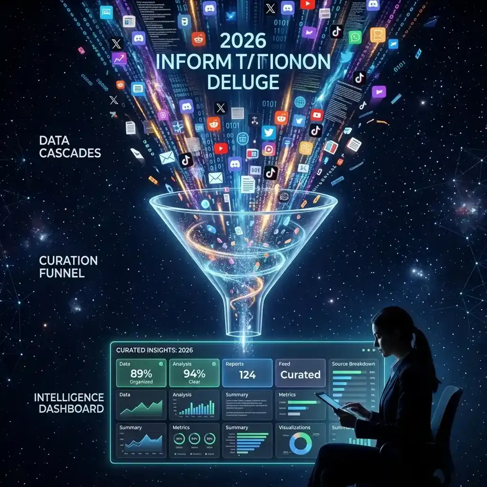

Streamlining Your Social Media Video Feeds

In the hyper-accelerated communication landscape of 2026, the concept of a "Social Media Feed" has transitioned from a simple list of friends' updates into a sophisticated, high-velocity "Intelligence Hub."
The information deluge is officially absolute. We are no longer struggling to find content; we are struggling to *filter* it. As vertical video, AI-generated narratives, and real-time community discussions (like those on X, Reddit, and Discord) collide in our pockets, the traditional "linear scrolling" model has become a burden rather than a benefit. To be truly informed—whether for professional intelligence, market analysis, or personal growth—you must move beyond the "passive feed" and into the "Strategic Curation" era. This deep-dive guide explores the evolution of modern feeds and examines how you can transform your digital experience from chaotic noise into a targeted radar for actionable Alpha. Success in 2026 is about the clarity of your information filter.
The Evolution of the Timeline: From Social Connections to Interest Clusters
The timeline of 2026 is no longer defined by who you know, but by what you *need*. The industry-wide shift toward "Algorithmic Interest Clusters" means that your feed is now a reflection of your current intellectual and emotional trajectory. Platforms like TikTok, YouTube, and X have moved past the "Friend Graph" (where you see content from people you follow) and into the "Relevance Graph" (where you see content that aligns with your active search history and sub-second interaction patterns). This makes the feed a powerful "Discovery Engine," but it also creates a high-stakes "Filtered Reality."
To navigate this effectively, you must understand that your interactions are "Feeds to the AI." Every like, share, and sub-second pause tells the neural network what to show you next. Strategic curation in 2026 involves intentionally "Feeding the Algorithm" the signals you want to receive. If you are looking for high-authority technical analysis (TA) for the Polish market, or deep-dives into 4K playback latency (perhaps using tools like YoutubeMulti), you must proactively engage with that specific content. By being an "Intentional Consumer," you ensure your feed remains a high-value intelligence tool rather than a low-value distraction loop. The feed is a mirror—make sure it reflects your goals.
Building Your Intelligence Radar: Aggregating Diverse Platform Signals
In 2026, the most valuable information is rarely found in a single place. The "Digital Truth" of a major global event, a product launch, or a market crash exists across a fragmented landscape of platforms. X (formerly Twitter) provides the high-speed "Breaking News" velocity. Reddit provides the "Deep-Dive Community Analysis." YouTube Shorts and TikTok provide the "Viral Visual Sentiments." Discord and Telegram provide the "Niche Direct Signals." If you are only monitoring one "Feed," you are only seeing one dimension of the story.
A multi-stream intelligence approach allowing you to monitor these individual platforms in real-time is an essential skill. Use one tile for a live "News Sentiment Dashboard," another for the latest technical analysis from your favorite YouTube expert, and a third for a live feed from an influential community leader on X or Reddit. This level of "Signal Triangulation" provides a level of context that single-feed research simply cannot match. For instance, seeing how the "Gaming Community" on Reddit reacts to a new hardware announcement while simultaneously monitoring the "Financial News" reaction provides a direct window into the product's likely mass-market success. Total situational awareness of fragmented feeds is the ultimate strategic edge.
The Role of Community-Driven Curation (Reddit, Discord, and Beyond)
As the AI-driven feeds become more automated, the value of "High-Authority Human Curation" has skyrocketed. Communities on platforms like Reddit and Discord have become the "First Responders" of the digital world. In a major controversy or a technical breakthrough, these sub-cultures provide the "Ground-Level Verification" that officially curated feeds often miss. However, the problem with these community-driven feeds is their sheer volume and chaotic nature. To be a successful analyst, investor, or creator, you must become your own "Veting Agency," filtering these raw signals against the official narrative.
YoutubeMulti’s robust multi-window capabilities are the perfect tool for this community verification process. When a "pre-viral" alert appears in a Discord channel or a sub-reddit, use your dashboard to immediately cross-reference it. Tile 1 for the original community report. Tile 2 for the official brand or government newsroom. Tile 3 for a live reaction from a reputable technical specialist who focusing on the specific niche. This multi-focal approach ensures that you are never reacting to single-source misinformation. The era of "blind reaction" is over; the era of "multi-source community verification" has arrived.
Managing Information Fatigue: Design Strategies for Multi-Screen Consumption
The biggest challenge of the 2026 information age is "Fatigue." The constant stream of high-energy, high-velocity feeds can lead to rapid burnout and a decline in decision-making quality. To be an effective "Information Strategist," you must design a consumption environment that supports focus rather than distraction. This means moving away from the "Endless Scroll" on a small mobile device and toward a "Mission-Controlled Dashboard" on a multi-screen setup. Organizing your information visually is the key to clarity.
Think about your information architecture. Dedicate your primary screen to your core "Goal-Based Feed" (e.g., your technical work or deep research). Use secondary screens for "Context-Based Feeds" (e.g., live sentiment dashboards, technical specs, or competitor monitoring). By spatially separating your diverse information sources, you reduce the cognitive load of "Tab-Switching" and allow your brain to build deeper connections between disparate data sets. A 100-video grid (monitored with high-performance tools like YoutubeMulti) isn't about watching 100 things; it’s about having 100 radars working for your specific objectives. Designing your dashboard is designing your thinking process.
Future Outlook: AI-Summarized Feeds and Narrative Context Layers
As we look toward 2027 and beyond, the future of social media feeds is undeniably data-driven and highly transparent. We are moving toward a world where AI agents will provide "Real-Time Contextual Summaries" for every item in your feed, explaining *why* it’s there and how it relates to your broader goals. Future dashboards will likely include built-in "Credibility Scores," real-time "Narrative Map" overlays, and seamless integration with global reputation-integrity databases. YoutubeMulti is already providing the foundation for this high-tech future, allowing users to build their own bespoke "Strategic Intelligence Grids" today.
Using YoutubeMulti to Build a Live Social Intelligence Dashboard
For the professional analyst or creator, having total situational awareness of the social meta-narrative is non-negotiable. Using YoutubeMulti to build an "Intelligence Operations Center" allows you to:
- Analyze Cross-Platform Sentiment: Monitor a live unboxing on YouTube while simultaneously tracking the "Hype-Twit" reaction on X and the technical "DD" on Reddit.
- Track Cultural Rotations: Keep an eye on high-velocity viral trends across different regions (like Poland vs. the USA) to see which messaging is currently resonating with global audiences.
- Monitor Competitor Moves: Watch three of your top competitors' latest uploads in real-time tiles to identify "Topic Gaps" in their strategy.
- Verify Breaking News: Cross-reference a "social-media rumor" against three reputable global news portals to ensure you are not reacting to misinformation.
Conclusion: Final Thoughts on the Personal Feed as a Strategy
The 2026 world of social media feeds is a multidimensional puzzle of data, sentiment, and speed. It is no longer enough to just "follow" the trends—you must monitor them as they breathe. By utilizing advanced curation strategies and professional tools like YoutubeMulti, you can ensure that you are always at the center of the intelligence curve. Don't just scroll—monitor, analyze, and build your digital legacy in the multi-stream future. The era of total semantic awareness has arrived.